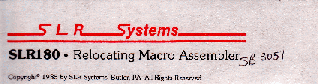
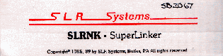

SLR Assembler
|
|
Das Originalpaket zum Runterladen gibt es hier:Download the original package here:
![[Download]](../../../gif/disk.gif)
Mit den Seriennummern:With the serial numbers:


| Zurück zu den Disassembler-AktivitätenBack to the disassembler activities |